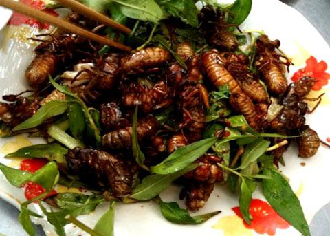

Förrätter
Toast maggots:
Frästa larver med en kalljäst surdegslimpa, ett trevligt alternativ om du vill byta ut toast-skagen mot något unikt!
79kr (£120)
Svartmyror med isbergsallad:
Rostade svartmyror innehåller stora mängder protein och är ett mycket populärt mellanmål längst Thailands gatukök, serveras med isbergsallad och caesarsås.
57kr (£80)
Huvudrätter
Rostad potatis med kokosnöts larver:
Rostad potatis med basilika och chilimarinerade kokosnöts larver. En tjock och krämig larv som anses öka potensen.
125kr (£400)
Myrrisotto:
Risotto med curry och rödmyror, toppad med färskhackad persilja. Myrorna ger en liten extra crunch till varje tugga.
99kr (£199)
Sushi med kokta gräshoppor:
Sushi är ett mycket populärt alternativ i Japan och serveras vanligen med rå fisk, men vi har bestämt att byta ut laxen mot kokta gräshoppor.
399kr (£10)
Efterätter

Citronmaräng med en twist:
Den självklara desserten för marängälskare! Pavlovan är en underbar rätt med mycket krisphet, sötma och krämighet.
20kr (£45)
Larvchokladmuffin:
passar perfekt när chokladsuget uppstår. Bjud vänner och familj på dessa klassiker ock se dem bli överraskade när de tar första tuggan!
169kr (£545)